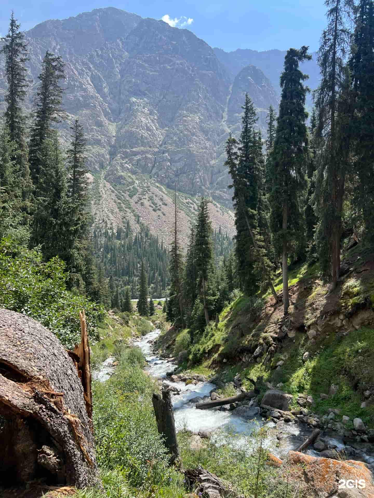
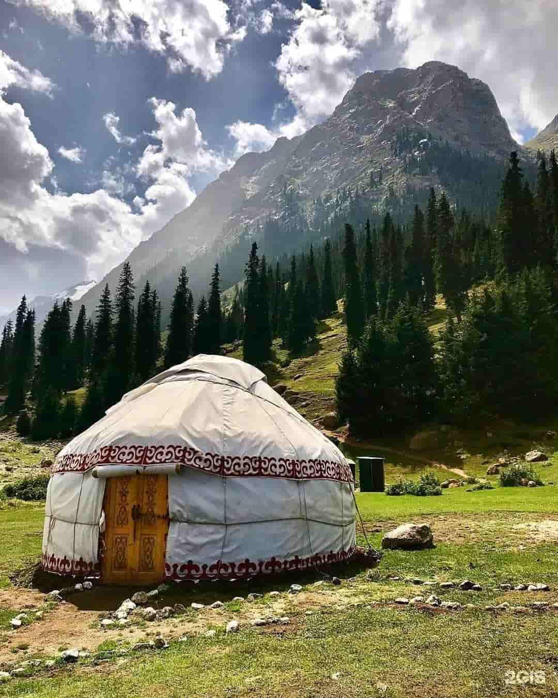
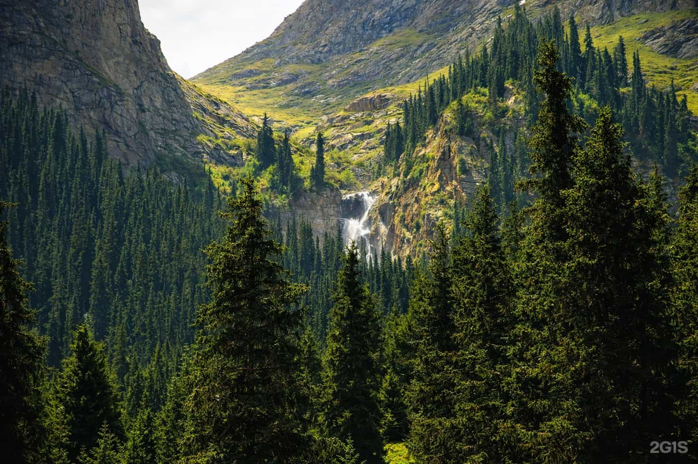

Barskoon Gorge is a south shore Issyk-Kul classic: a long valley with spruce forests, river turns, and a waterfall hike that feels “real mountains” but stays easy. The highlight is the famous Barskoon waterfalls — especially “Tears of the Leopard”.
What is Barskoon Gorge?
A scenic valley in the Issyk-Kul region, stretching deep into the Teskey Ala-Too mountains. It’s known for forests, waterfalls, and easy hikes that fit perfectly into a one-day route.

Waterfall Hike
Short hike with a big reward. Best for first-time mountain visitors.

Horse Riding
Summer vibe: horses + valley views. Perfect for cinematic shots.

Yurts in Barskoon
Bring tea/snacks. Calm places everywhere along the water.

Photo & Video
Wide landscapes + close details (spruce, water, rock textures).
Quick tips before you go
-
🌅
Go early Better light + less people on the trail.
-
🥾
Wear proper shoes Rocks can be slippery near the waterfall.
-
💧
Bring water No guaranteed shops up the valley.
-
📸
Film the story Start with road shots → forest → water → final waterfall reveal.